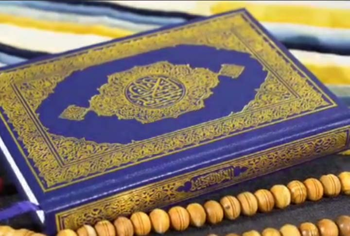
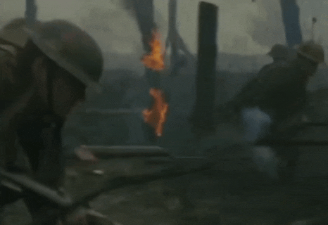
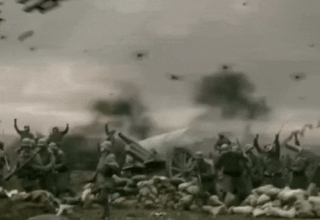
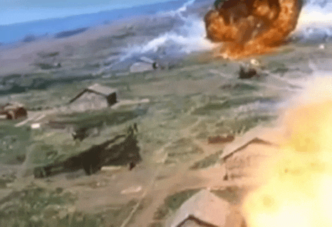
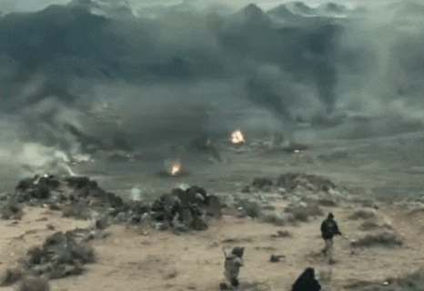
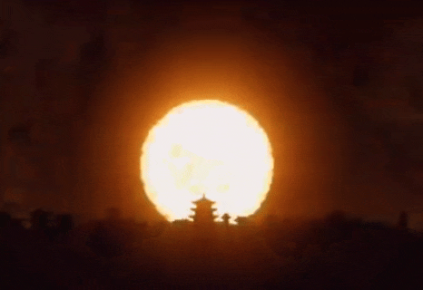
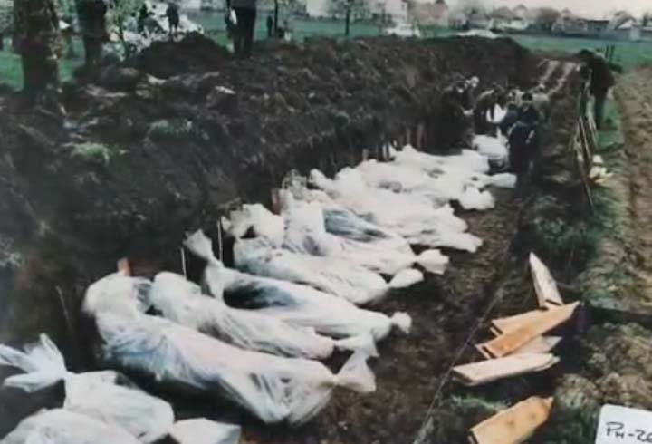
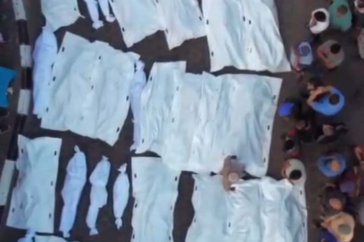
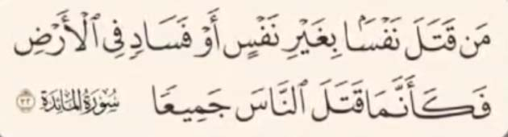

اسلام دینیه که مبنا و هویت خودش رو از قرآن میگیره نه از عملکرد افراد یا گروه ها
اگر افرادی به نام اسلام رفتار های نادرستی دارن این نشونه عدم پایبندی اونها به اسلامه
اسلام واقعی بر محور رحمت ، عدالت و عقلانیت استواره و هر عملی خارج از این چارچوب در تضاد با اسلام محسوب میشه
اسلام راستین رو با معیارهاش می سنجند نه با رفتار های غلط مدعیانش
افرادی مثل آخوند، شیخ، ملا یا مولوی نماینده های اسلام نیستن تنها نماینده اسلام قرآنه ما حتی چیزی بعنوان لباس و ظاهر اسلامی هم نداریم پیامبر لباس مخصوص نداشتن ، لباسی که پیامبر می پوشیدن همون لباس مرسومی بود که مردم اون زمان تو مکه و مدینه می پوشیدن
پیامبر بعد از رسالت مدل لباس و ریششون تغییر نکرد اسلام به قیافه و لباس و ریش نیست و چه زیبا خداوند در سوره صف آیه 2 قرآن می فرماید :
پیامبر اسلام بعد از فتح مکه دشمنان دیرینه خودش که سال ها به آزار و اذیت مسلمونان پرداخته بوده اند همه اونهارو بخشید درحالی که میتونست از تک تکشون انتقام بگیره
پیامبر فرمود :
و تمام مشرکین مکه رو بخشیدن این رفتار نمونه ای بی نظیر از عفو و گذشت در تاریخ بشره
اما در مقابل فقط در جنگ جهانی دوم حدود 70 تا 85 میلیون نفر کشته شدن
در جنگ جهانی اول حدود 15 تا 22 میلیون نفر کشته شدن
در جنگ ویتنام حدود 3 میلیون کشته شدن
در حملات آمریکا به عراق و افغانستان حدود نیم میلیون نفر کشته شدن
در بمباران اتمی هیروشیما و ناکازاکی حدود 220 هزار نفر کشته شدن
در جنگ بوسنی بالای 100 هزار کشته شدن
و در جنگ غزه تا همین الآن حدود 70 هزار نفر کشته شدن
و تمام این کشتار ها و جنایت ها توسط غیر مسلمانان ها و افرادی که اعتقادی به این دین ندارن انجام شده
هیچ یک از سلاح های کشتار جمعی توسط مسلمانان واقعی اختراع و به کارگیری نشده
خدا در قرآن توی سوره مائده :
